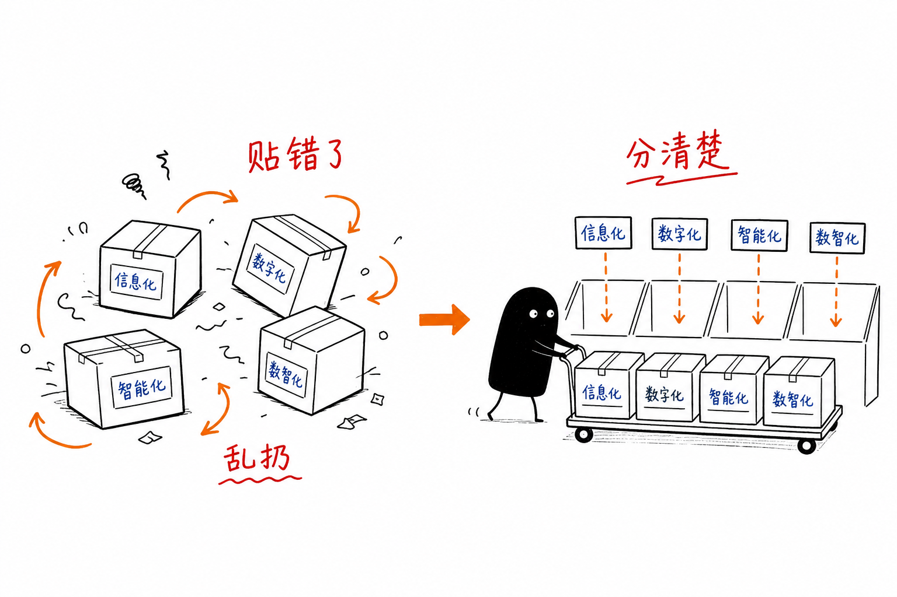
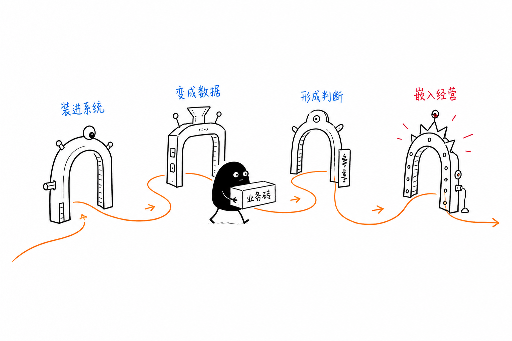
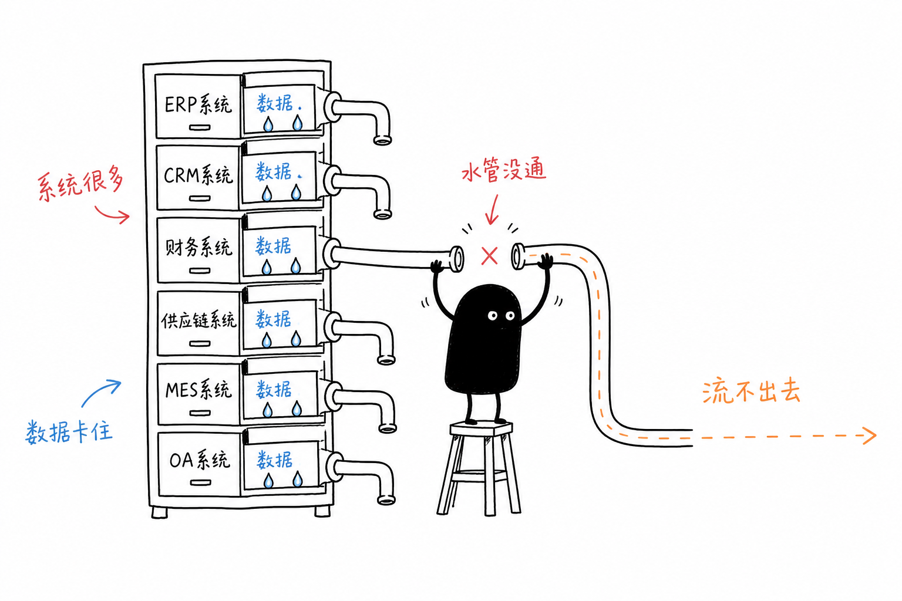
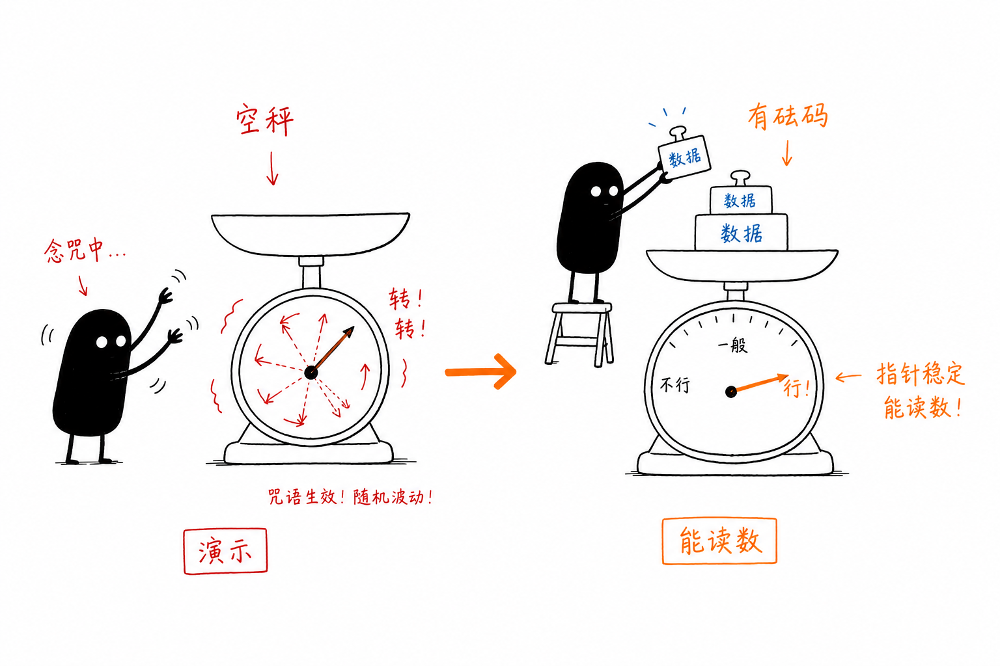
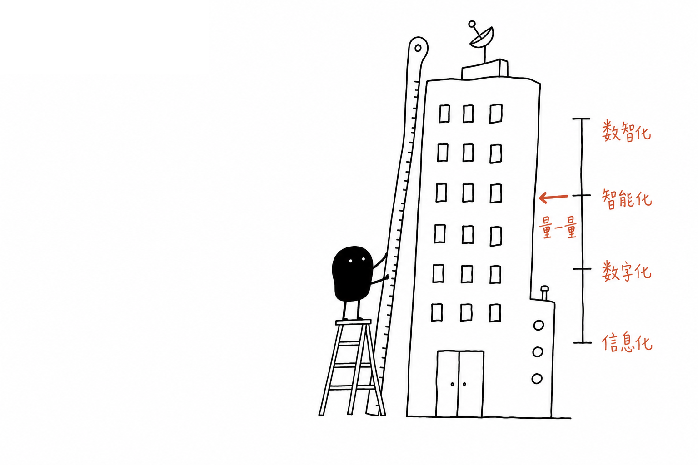
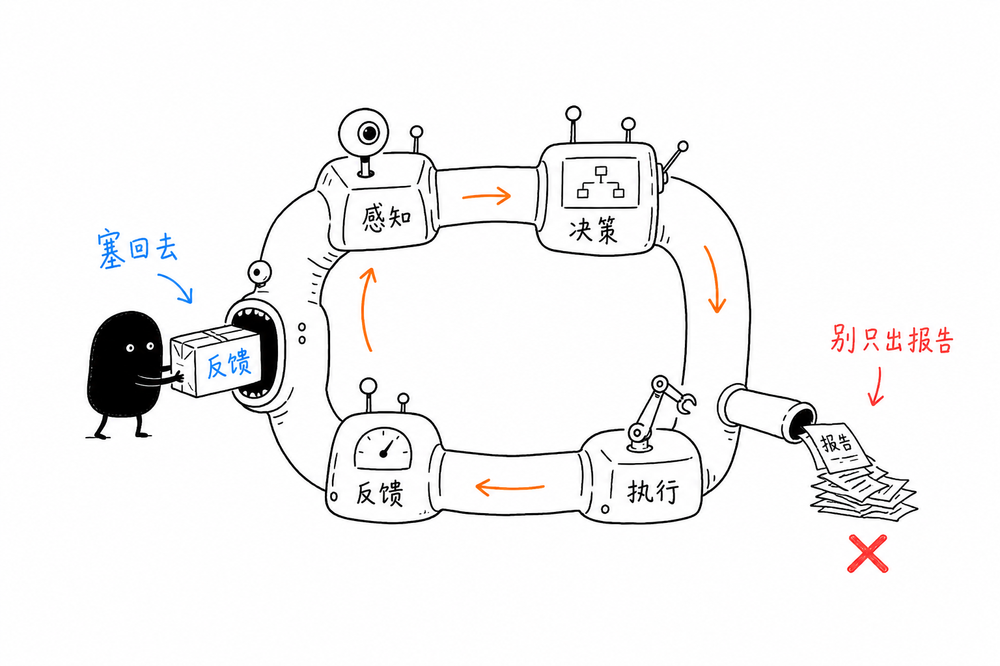

01 · 信息化
把业务装进系统
固化流程、留痕与管控。关心：是否还依赖 Excel、微信群和口头传达。
企业管理者精读版 · 全文自洽，无需另附 Markdown
信息化、数字化、智能化、数智化不是采购清单上的四个模块，而是企业经营能力的不同层级。大模型让“看起来很智能”变得容易，管理者更需要看清：企业到底在哪一层，下一件事该补什么。

给管理者的 30 秒理解：四者是能力层级，不是采购清单。自问三句——我们在哪？缺什么？下一件事改善哪项经营指标？
大模型降低了做出演示效果的门槛，也抬高了概念混淆的代价。
这项投入改善了哪一项经营指标？如何验证？责任由谁承担？
战略目标模糊、建设顺序错误、投入失衡、价值难衡量——例如主数据未统一就上 AI 经营分析，或核心流程仍线下却直接上智能助手。
先记住一句话，再点开弹层阅读完整定义、价值、局限与对照案例。

固化流程、留痕与管控。关心：是否还依赖 Excel、微信群和口头传达。
不只上线，而是用数据重新认识与运营业务。关心：决策是否因数据而改变。
预测、推荐、预警或自动执行。关心：是否稳定解决具体问题并能量化收益。
数据与智能进入战略、组织、流程与决策机制。关心：是否形成感知—决策—执行—反馈。
| 概念 | 典型动作 | 常见假象 | 成立标准 |
|---|---|---|---|
| 信息化 | 上线 ERP/CRM/OA，流程进系统 | 系统很多，Excel 仍是业务真相 | 核心业务在系统执行，关键节点可留痕、可追责 |
| 数字化 | 打通数据、统一口径、精细运营 | 大屏很多，决策仍靠开会拍脑袋 | 数据改变经营动作，状态可看见并响应 |
| 智能化 | 预测、推荐、预警、自动执行 | 演示很好，上线后闲置或只做旁路工具 | 嵌入真实流程，效果可量化，错误可纠正 |
| 数智化 | 智能结果进入决策与执行闭环 | 项目很多，却没有经营反馈循环 | 人机协同成机制，结果持续复盘并驱动迭代 |

| 对比维度 | 信息化 | 数字化 | 智能化 | 数智化 |
|---|---|---|---|---|
| 核心目标 | 规范流程、提高效率 | 数据驱动业务重构 | 提升预测和决策能力 | 重构企业经营与管理体系 |
| 主要对象 | 业务流程和信息记录 | 客户、业务、资产和经营数据 | 预测、判断、推荐和执行 | 战略、组织、流程、数据和智能 |
| 主要手段 | 软件系统、数据库、网络 | 数据连接、分析、在线运营 | 算法、模型、AI和自动化 | 数据平台、AI与经营机制融合 |
| 典型问题 | 业务是否进入系统 | 数据是否能够驱动经营 | 系统能否形成判断 | 能否形成智能经营闭环 |
| 决策方式 | 人工经验为主 | 数据辅助决策 | 模型辅助或自动决策 | 人机协同、持续优化 |
| 管理视角 | 部门与流程 | 客户与价值链 | 任务与决策场景 | 企业整体经营体系 |
| 建设重点 | 系统覆盖 | 数据连接和业务重构 | 模型准确性与业务嵌入 | 战略、机制、组织和技术协同 |
| 衡量结果 | 系统使用率、流程效率 | 数据质量、经营透明度、业务改善 | 准确率、自动化率、决策收益 | 收入、利润、效率、风险与组织能力 |
总体有演进逻辑，但不是全公司整齐划一的线性台阶。应按业务域分别评估。

业务标准化 → 业务在线化 → 数据资产化 → 决策智能化 → 经营闭环化。
智能化强调能力，数智化强调体系。单点智能应用不等于完成数智化转型。
20 题，四维各 5 题；结果落位到 8 档阶段（信息起步→数智闭环）。答题时上方刻度盘会吸顶，便于边答边看水位。建议按某一业务域分别作答。

五档作答：几乎没有 → 稳定做到。建议按某一业务域填写。
—
90 天优先动作
数智化首先是经营战略，不是 IT 战略；真正对象不是软件，而是经营能力。
核心业务进系统，关键节点可记录。
跨部门、跨系统流程贯通。
核心数据统一、准确、及时、可追溯。
发现问题、解释原因、评估结果。
预测、推荐、预警、优化与决策辅助。
策略、执行、反馈与优化持续循环。
真正有效的数据应用要回答四层：发生了什么 → 为什么发生 → 未来会怎样 → 应该怎么做。只停留在第一层，仍是可视化，不是数智化。
不要从“准备买什么系统 / 接什么模型”出发，而从经营问题出发。点击每一步可阅读完整细则。

增长、效率、利润、风险、组织——每项目至少对应一个可验证指标。
优先高频、高价值、强依赖个人经验的场景。
核心业务在线、关键节点留痕、减少系统外操作。
主数据、指标口径、质量、权限与责任机制。
从“发生了什么”走向原因、预测与行动任务闭环。
按价值、数据、规则、频率、可验证性评估。
机器做高频低风险；人做价值权衡与责任承担。
数智化不能由 IT 单独推动；路线图控制节奏，避免同时开过多项目。
每个项目明确业务/产品/技术/数据负责人，以及目标、收益、验收指标与复盘周期。验收应覆盖系统、数据、业务与经营价值。
战略、价值链、系统与数据盘点、场景优先级、路线图。
一个核心闭环、一套统一指标、2–3 个可量化智能试点。
数据资产、模型管理、流程嵌入、人机协同机制。
企业级智能决策、关键场景闭环、新业务模式探索。
不要只提“建客户数据平台”，要提转化率、流失率、响应时长等可验收结果。
每天发生、大量人工、规则相对明确、数据可得、效果可测、对收入成本或风险影响明显。
流程与口径不清时上系统，只会把混乱固化。先明确异常、权限与评价。
数据采集 → 指标 → 异常 → 任务 → 反馈。一个有效小闭环，胜过空转的大平台。
敏感数据、权限、审核、留痕与供应商管理必须同步建设。
数字化/数据/AI 产品经理、业务架构师、分析师、治理负责人，把业务问题翻译成可建设问题。
看收入、毛利、成本、风险是否改善，而不是看上了多少模型和看板。
系统上线只是信息化。只有数据开始改变经营动作，才进入数字化。
大屏提高可视性。管理还需要责任、分析、任务与复盘机制。
大模型只是技术手段之一。有效性看能否稳定解决业务问题并产生可量化价值。
口径不一、样本不可信时，AI 只会产出“看起来合理但难以验证”的结论。
考核、审批、部门边界不变，新系统常被旧管理方式抵消。
数智化是持续迭代的经营变革：小步验证、快速扩展，而不是一次宏大工程。
能够及时感知经营变化，准确识别问题，科学制定策略，高效组织执行，并根据结果持续优化——这才是数智化的最终目的。
信息化让业务有系统；数字化让经营有数据；智能化让系统有判断；数智化让企业形成数据驱动、智能决策与人机协同的经营体系。
信息化是指企业利用软件、数据库、网络和信息系统，将原本依靠纸质文件、人工记录、电话沟通和线下审批完成的业务活动，转移到信息系统中进行管理。
将业务过程固化为系统流程，将线下记录转化为结构化信息。
例如：运输企业从纸质运单、电话派车、Excel统计，升级为在线创建运单、分配车辆、记录节点、生成结算——属于典型信息化。
信息化并不天然等于数字化。常见现象：系统相互独立、口径不一致、跨系统断裂、只用于事后统计、决策仍靠经验。核心成果是“业务被系统承载”，不一定意味着“数据能够驱动经营”。
数字化是指企业将客户、产品、交易、流程、资产、组织和经营活动转化为可连接、可计算、可分析和可运营的数据对象，并基于数据重新设计业务流程、经营模式和管理机制。
不只是将原有业务搬到线上，而是利用数据重新认识和经营业务。
衡量标准不是系统数量，而是：经营状态能否实时看见、问题能否快速定位、动作能否形成数据反馈、规则能否系统执行、决策结果能否持续验证。
智能化是指企业利用机器学习、知识图谱、运筹优化、自然语言处理、大模型、计算机视觉等技术，对业务数据进行分析、预测、判断、推荐或自动执行。
从“系统按照固定规则执行”，升级为“系统能够基于数据形成判断”。
物流例子：记运单＝信息化；打通订单/车辆/司机/线路/成本＝数字化；自动推荐车辆司机＝智能化；预测—调度—执行—监控—复盘闭环＝数智化。
依赖稳定系统、完整采集、统一标准、清晰规则、可验证样本、明确目标与持续反馈。单点智能（客服、问答、写报告）不等于企业完成数智化转型。
数智化是数字化与智能化的深度融合。不是简单把数据平台与AI模型放在一起，而是把数据、算法和智能能力嵌入战略、组织、流程、决策与执行反馈。
让数据成为企业经营的基础生产要素，让智能成为企业决策和执行的基础能力。
最终目标不是“看起来更先进”，而是更低成本、更高效率、更快响应、更准运营、更强风控、更高质量决策与更可复制的组织能力。
很多企业在转型中存在典型问题：
概念不清会导致：战略目标模糊、建设顺序错误、投入结构失衡、转型价值难衡量。例如尚未统一主数据就建AI经营分析；核心流程仍线下却上智能助手；口径不统一却要求自动输出经营结论；规则未标准化却希望算法自动决策。
结论：先明确所处阶段，再决定下一阶段补齐什么能力。
应从这些问题出发，而不是从“准备建设什么系统”出发：
“客户利润下降”可能同时涉及定价、履约成本、服务质量、采购价格、账期、优惠与异常损失。建设应从端到端价值链出发：线索到回款、需求到交付、采购到付款、订单到履约、问题发现到闭环改进。
数智化要把数据转化为：预警 → 建议 → 决策 → 任务 → 执行 → 反馈。
每一个数智化项目，都应至少对应一个明确的经营指标。
不能只梳理业务流程，还应梳理流程中的关键决策。
| 分析内容 | 核心问题 |
|---|---|
| 业务对象 | 客户、订单、产品、合同、资产等是否定义清晰 |
| 流程节点 | 哪些节点依赖人工传递和线下沟通 |
| 数据来源 | 数据在哪里产生，由谁维护 |
| 决策动作 | 哪些节点需要判断、审批、选择或预测 |
| 业务规则 | 规则是否明确，能否标准化 |
| 异常情况 | 哪些问题频繁出现 |
| 价值指标 | 哪些指标反映该流程是否有效 |
| 责任主体 | 谁对数据、决策和结果负责 |
优先三类场景：高频重复且标准化；对收入/成本/风险影响大；高度依赖个人经验。
检查重点：大量Excel台账；依赖微信群/电话/口头传递；重复录入；系统外操作；关键节点缺时间与责任记录；系统与实际业务脱节；移动端不支持一线操作。
目标不是盲目加系统，而是确保：核心业务有系统承载；关键过程有数据记录；业务规则可通过系统执行；权责关系可通过系统体现。
统一管理客户、供应商、产品、组织、员工、车辆、设备、站点、区域等。
明确指标名称、定义、计算公式、数据来源、统计周期、责任部门、更新频率、使用范围。
持续监控完整率、准确率、一致率、及时率、唯一性、可追溯性。
按数据分类、组织范围、角色职责和业务场景配置权限。明确：谁产生、谁维护、谁定义口径、谁批准变更、谁对质量负责、谁可以使用。业务部门必须成为数据责任主体。
从“报表体系”升级为“经营管理体系”。
指标异常 → 原因定位 → 责任识别 → 行动任务 → 结果跟踪 → 策略复盘
不要从“哪里可以用AI”出发，而从“哪些决策值得智能化”出发。
| 评估维度 | 评估内容 |
|---|---|
| 业务价值 | 是否显著影响收入、成本、效率或风险 |
| 数据基础 | 是否具备足够、准确、连续的数据 |
| 规则清晰度 | 业务目标和约束条件是否明确 |
| 使用频率 | 是否属于高频业务场景 |
| 可验证性 | 模型效果和经营结果是否可以量化 |
优先场景：经营异常预警、流失预测、需求预测、智能定价、资源调度、风险识别、智能客服、单据审核、知识助手、报告生成、经营分析助手。
生成式AI额外关注：知识来源可信、答案可追溯、敏感数据泄露、人工审核、错误后果、权限边界。
高风险场景不宜直接完全自动化。
战略层（董事长/总经理/核心班子）：转型方向、经营目标、跨部门资源、重大项目、转型价值评估。
业务层（业务/产品/数据负责人）：定义业务问题、设计规则、明确口径、推动流程变革、对业务结果负责。
技术层（IT/数据/算法/安全）：技术架构、数据平台、系统与模型、安全稳定、技术支撑。
每个项目明确：业务/产品/技术/数据负责人，业务目标、预期收益、验收指标、复盘周期。验收应包括系统、数据、业务与经营价值，不能只用“是否上线”。
明确战略目标；梳理价值链；盘点系统；评估数据质量；识别痛点；建立项目清单；定优先级与责任人。产出：战略地图、能力评估、系统与数据资产清单、核心指标、场景优先级、2–3年路线图。
补齐核心系统；打通关键流程；统一主数据与指标；建设集成分析能力；管理驾驶舱；少量高价值试点。优先完成：一个核心业务闭环、一套统一经营指标、两至三个可量化智能场景。
推广试点；企业级数据资产；算法模型管理平台；预警/推荐/预测嵌入流程；人机协同岗位机制；业务规则平台化。
企业级智能决策；关键场景闭环；模型持续学习；智能运营中心；逐步形成新产品、服务与商业模式。
企业应建立AI使用规范，包括：敏感数据分类；模型访问权限；提示词和知识库管理；输出内容审核；操作日志留痕；高风险动作确认；第三方模型评估；AI供应商管理；员工使用边界；事故响应机制。
涉及财务、客户、合同、生产、安全和个人信息的场景，不应允许员工随意将原始数据提交给未经批准的外部模型。
总体逻辑：业务标准化 → 业务在线化 → 数据资产化 → 决策智能化 → 经营闭环化。
但并非严格先后。企业可能财务高度信息化、客户运营数字化、客服接了大模型、供应链仍靠经验。应按业务域分别评估成熟度。
信息化是基础不是终点；数字化是智能化重要前提（完整、准确、一致、及时、可解释、可追溯）；智能化是数智化的能力组件，数智化强调体系：谁用智能结果、影响什么决策、如何执行、如何反馈、如何改进、责任谁承担。